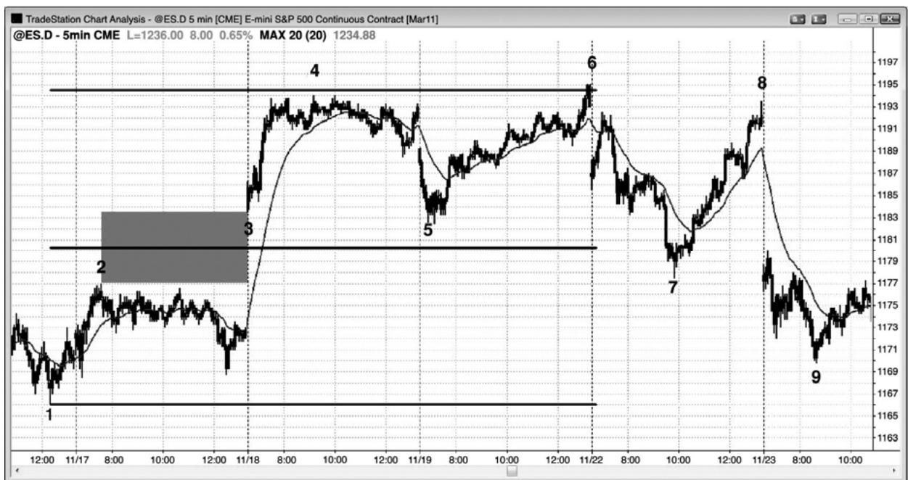
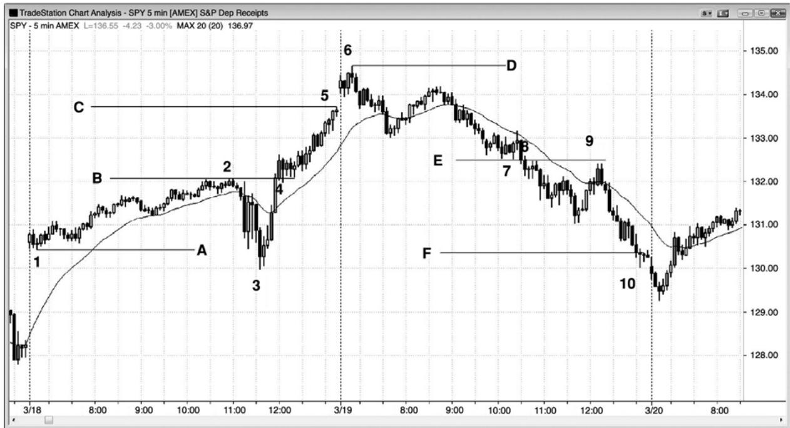
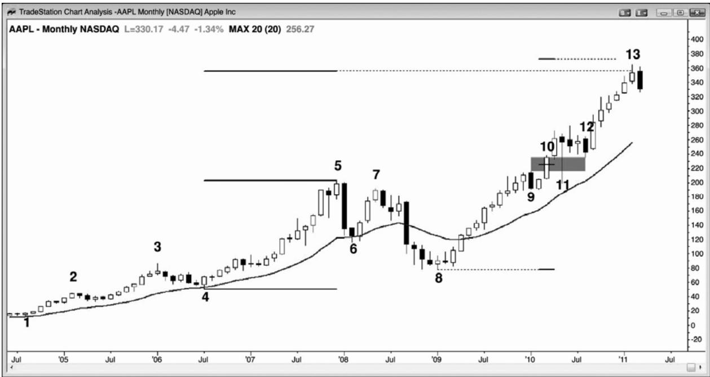
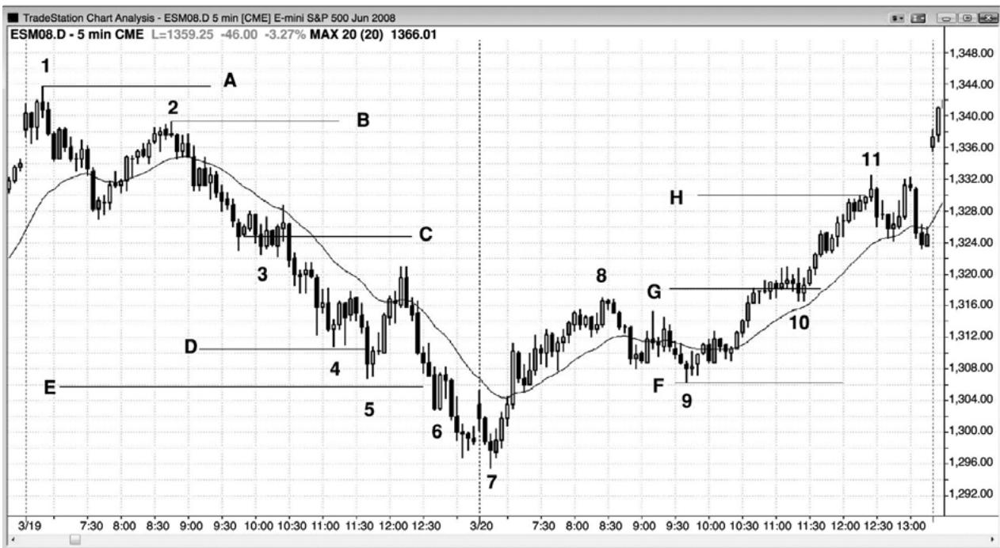
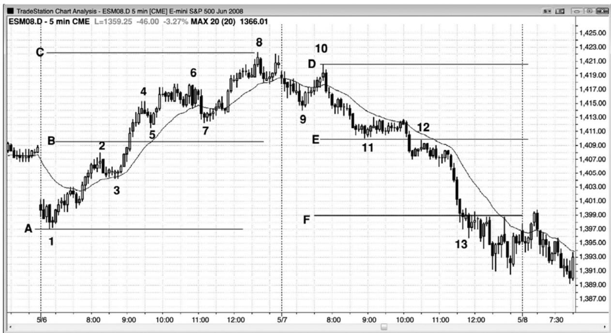

第8章 基于缺口和交易区间的测量运动¶
第 8 章 基于缺口和交易区间的测量运动
缺口在日线图中是很常见的，一棒的低点高于前棒的高点，或者一棒的高点低于前一棒的低点。如果说关于市场方向有什么暗示，那么缺口中点常常成为趋势的中点。当市场靠近测量运动目标时，交易者们会仔细观察精确的目标，常常在那一区域部分或全部获利了结，有些交易者将开始反向建仓。这常常引起一个暂停、一个回撤、甚至一个反转。
当突破出现在日内图表上时，很少会出现这种缺口。但是，存在同样可靠的形态，那就是突破点和第一个暂停或回撤之间的缺口。举例说明，如果市场向上突破了一个波段高点，突破棒是一条相对大型的多头趋势棒，下一棒的低点高于突破点，那么在那个低点和突破点之间便形成一个缺口，那常常成为一个测量缺口。如果突破后的一棒也是一条大型多头趋势棒，那么就要等待第一条小型多头趋势棒、空头趋势棒或十字星棒。然后，它的低点就是缺口的顶端。如果突破点或突破回撤不清晰，那么市场常常会把突破棒的中点作为缺口的中点。在这种情况下，测量运动是基于反弹起点到突破棒中点的距离。然后，预期市场在那一价位上方上涨大致相同的跳动数。
如果市场在突破后几棒出现回撤，而且回撤的低点进入缺口，那么缺口现在就变小了，但是它的中点仍然可以用来寻找测量运动目标。如果市场进一步回撤，甚至到达略低于缺口的价位，那么突破点和回撤之间的中点仍然可以用来投影。因为突破回撤和突破点之间的差成为负数，所以我把它称为负缺口。当测量运动投影是基于负缺口时，它们的可靠性较低。
在市场轮廓图上，这些市场快速运动的日内测量缺口，是两次派发（distributions）之间的瘦区，代表着单向市场形成的价格。派发是“胖”区，就是双向交易发生的交易区间。交易区间是对价格达成一致意见的区间，它的中点就是多空双方认为公平的中点。缺口也是一个达成一致意见的区域。在缺口这个区域里，多空双方一致认为不应产生交易，它的中点就是那个区域的中点。在这两种情况下，从一个简单的层面上来说，如果那些价格是多空双方一致同意的中点，那么它们就是包含它们的腿形的大致中点。一旦它们形成，就把你的部分或全部顺势入场交易波段化。当接近测量运动目标时，如果出现很好的架构，那么就要考虑逆势入场。大部分交易者使用前一交易区间的高度投影测量运动，那没有什么总是，因为无论你怎样投影，精确的距离都只是近似（除非你是一位斐波那契或波浪交易者，并且拥有不可思议的能力说服自己，市场几乎总是形成完美的形态，尽管压倒性的证据表明几乎没有完美的形态）。关键是只做顺势交易，但是一旦市场进入测量运动的目标区域，你就可以开始寻找逆势入场。然而，仅当首先形成足够强的逆势运动，突破趋势线后，才会出现最好的逆势
交易。
如果市场在到达测量运动目标后暂停，那么两条很强的趋势腿可能只是更高时间框架上一次调整的终点，如果看起来是那种情况，那么就把任意逆势入场的交易部分波段化。两条腿常常完成一波运动，那波运动之后通常至少是一波延长的逆势运动，至少包含两条腿，有时那波逆势运动会成为一轮新的反向趋势。那么逆势运动常常原路返回测试突破点。
有时，投影相当精确，但大部分时间市场都会在测量运动目标处欠冲或过冲。这种方法只是使你在市场的正确一方交易的一种向导。

P98
缺口的中点常常引起一波测量运动。在图 8.1 中，电子迷你在棒 3 形成一个上涨缺口，超越了前一棒的高点棒 2，那个缺口的中点可能是上涨运动的中点。交易者们从那波上涨运动的底部棒 1 测量至缺口中点，然后向上投影相同的点数。棒 4 出现在投影目标的几个跳动之内，但是很多交易者认为电子迷你中的目标仍然没有得到足够的测试，除非市场至投影目标的距离不超过 1 个跳动。这使交易者们可以自信地在第二天开盘截止 5 的迅猛下跌中买进。当日高点比测量运动投影高出两个跳动。市场在第二天抛盘下跌至棒 7，但是再次反弹测试那一目标，在略低于那一目标处反转。下一天，多头放弃，出现一个大型下跌缺口，然后是一波抛盘。电视权威们当然会使用新闻报导来解释所有这些运动，但实际上那些运动是以数学为依据的。市场只是为市场做已经在做的事情所找的托词。

图 8.2 所示的两个交易日，出现了以瘦区为基础的测量运动。瘦区是突破区，棒线之间几乎没有重叠。
太平洋标准时间上午 11:15，联邦公开市场委员会（FOMC）发布报告，市场从棒 3 起快速上扬，突破了当日高点棒 2。棒 4 处的旗形以两条腿横盘调整测试那个突破，在棒 2 顶部和突破测试棒 4 底部之间，形成一个小型负缺口。如果从棒 4 回撤低点减去棒 2 突破点的高度，那么就得到一个负数，即缺口的高度。虽然负缺口的中点有时产生完美的测量运动，但是比较常见的情况是测量运动的终点将等于突破点的顶点，这里指棒 2 高点，减去初始交易区间的底部，这里是棒 1 低点。你还可以使用棒 3 低点计算测量运动，但是首先观察最近的目标总是会更好一些，仅当市场穿越较低目标时，才考虑较远的目标。刚好在当天最后一棒，市场到达线 C 目标，测量运动高度等于从线 A（棒 1）到线 B 的高度，第二天开盘向上刺穿了使用棒 3 至线 B 投影的线 D 目标。尽管棒 1 高于棒 3，但是仍可认为它是测量运动的底，截止棒 3 的抛盘只是对腿形实际低点棒 1 的一次过冲。
P99
第二天，在棒 7 下方和棒 8 上方出现一个缺口，线 F 目标恰好在收盘前被超越。
顺势提一句，在棒 8 和棒 9 也形成一个双重顶空头旗形。

在图8.3所示的月线图上，苹果（AAPL）处于一轮强多头趋势中。每当出现一轮趋势时，交易者们便会寻找合理的价位部分或全部获利了结。他们通常会求助于测量运动。棒13仅比基于从棒 4 到棒 5 的强势反弹的测量运动目标略高一点。
棒 10 是一条多头趋势棒，向上突破了试图向上突破棒 5 的尝试之后的回撤棒 9。每条趋势棒都是一条突破棒和一条缺口棒，这里棒 10 的作用就像一个突破缺口和一个测量缺口。虽然棒 11 向下刺穿棒 10 低点，但是作为一条失败的突破棒，下跌运动很可能不会出现多少坚持到底，因为信号棒是第三条连续的强多头趋势棒。这表现处太多的动能，所以不是一个可靠的空头架构。在棒 12，市场再次测试进入棒 9 上方的缺口，这次回撤带给交易者一个潜在的测量缺口。市场在棒 13 向下反转，对于利用从棒 8 低点到那个缺口中点的向上投影的测量运动目标，大约低了3%。市场可能处于形成双棒反转的过程中，可能引起一次更深的调整，包含几条腿，持续 10 棒或更多棒。由于棒 13 是第 6 条连续的多头趋势棒，所以上行动能仍然很强。当这样强的力量出现在一轮延长的多头趋势之后时，它有时代表着趋势的高潮耗尽，接下来会出现较大的调整。这是将多头头寸部分或全部获利了结的合理位置，但是仍未出现很强的做空架构，让交易者们根据这张月线图新建空头。但是，由于仍未形成明显的顶部，所以很可能再出现一次上推，到达基于棒10缺口的测量运动目标。
虽然现在说有点为时过早，但是交易者可能使用棒 8 低点到棒 9 高点投影一个测量运动目标。尽管没有画出，但是那个目标略低于以棒 4 至棒 9 多头尖峰为基准的测量运动目标，那个目标市场已经超越。在知道市场已经到达高点，还是会到达以棒10缺口为基准的测量运动目标前，交易者们需要看到更多棒线形成。如果市场继续上涨，那么可能会也可能不会找到获利了结者和做空者，但是由于它是一个明确的测量运动磁力位，所以获利了结和做空都是合乎逻辑的。

P100
如图 8.4 所示，截止棒 3 附近的突破回撤空头旗形的下跌运动非常陡峭，一个合理的向下的测量运动投影高度是从旗形顶部（棒 2）到旗形的近似中点（线 C）。这将投影至线 D，线 D 被过冲，引起一次均线测试。你还可以使用棒 1 高点做测量运动投影，但是一般应该把当前腿形的起点作为你的第一个目标。在到达线 D 目标后，根据棒 1 起点的线 E 目标随后被击中。注意，从棒 2 到棒 4 的下跌运动是一轮很强的空头趋势，没有明显的趋势线突破，所以最好坚持做顺势交易。
棒 4 附近的小型楔形空头旗形几乎水平，所以可能是一个最终空头旗形，但是，由于仍未出现迅速的上涨（比如超越指数均线的缺口棒），所以逆势交易者只有是刮头皮（如果你选择逆势交易的话）。仅当你是一位足够优秀的交易者，能够在顺势架构一形成时便切换到顺势交易时，你才应该选择逆势交易。如果你不是，那么就不应做逆势交易，相反地，你应该努力去选择顺势交易。仅仅进入测量运动目标区并不足以成为逆势入场的理由。你需要一些早期的逆势力量。
第二天，市场在向上突破棒 8 后，在棒 10 附近形成一个旗形。这次对双重底多头旗形的向上突破向上投影至线H。第一个底部是从棒7开始的上涨尖峰中的那个单棒回撤。相反地，如果你使用当日低点棒 7，那么所得目标在次日的上涨缺口之后不久便被击中。
一旦出现一个突破旗形，明智的做法就是把你的顺势交易部分波段化，直到到达测量运动目标。那时，如果出现好的架构，那么就考虑逆势交易。

P101
如图 8.5 所示，线 B 是突破（棒 2 高点）和第一个回撤的低点（棒 5 低点）之间的瘦区的中点。测量运动在棒8被准确击中。
线 E 是一个瘦区的中点，市场极大地过冲了它的线 F 投影。市场突破棒 12 空头旗形后形成一个很大的瘦区，下跌至棒 13，但时间已经非常晚，从它中点开始的测量运动目标很可能不会被击中。然而，在那一点处，当天已经成为一个明显的空头趋势日，交易者们只应做空，除非存在清晰而强劲的多头刮头皮机会（在最后一小时内出现几个）。截止棒 13 的五棒下跌尖峰引出一波向下的测量运动，当日低点与它相距只有1个跳动。
顺便提一句，截止棒 7 的那波运动突破了一条趋势线，表明空方正变得越来越强，截止棒9的那波运动突破了一条重要趋势线，在棒10形成对趋势极点（棒8）的更低高点测试，随后市场进入空头趋势